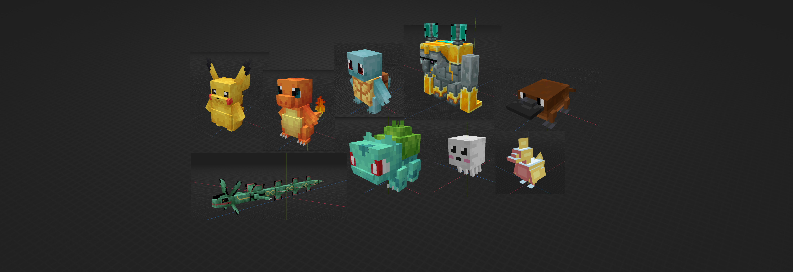
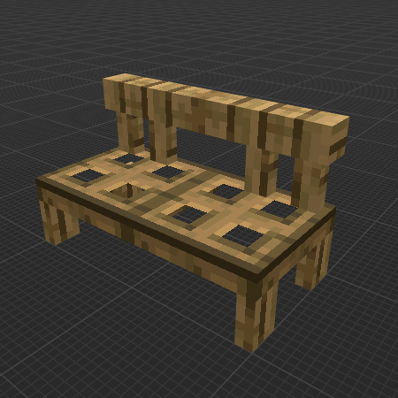
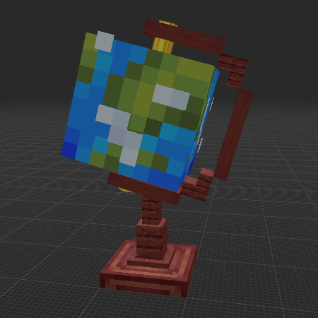
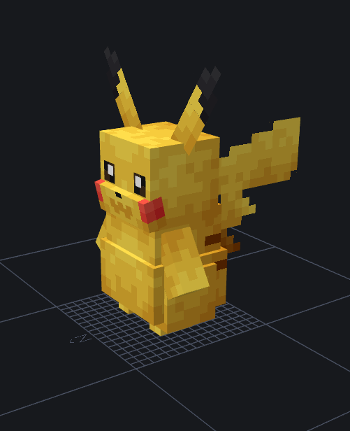
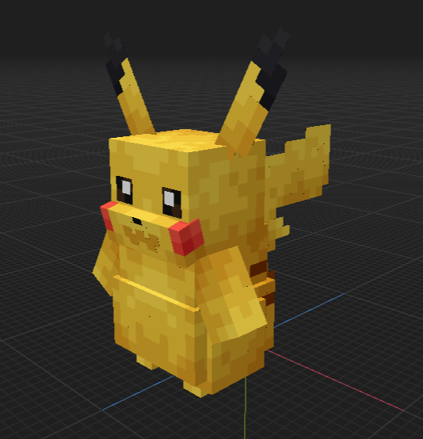
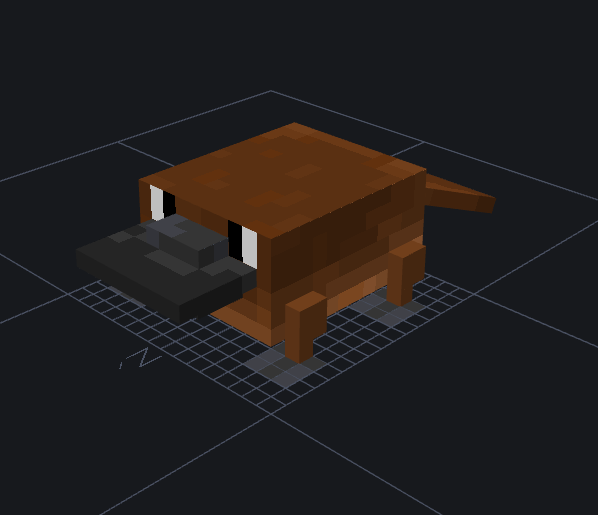
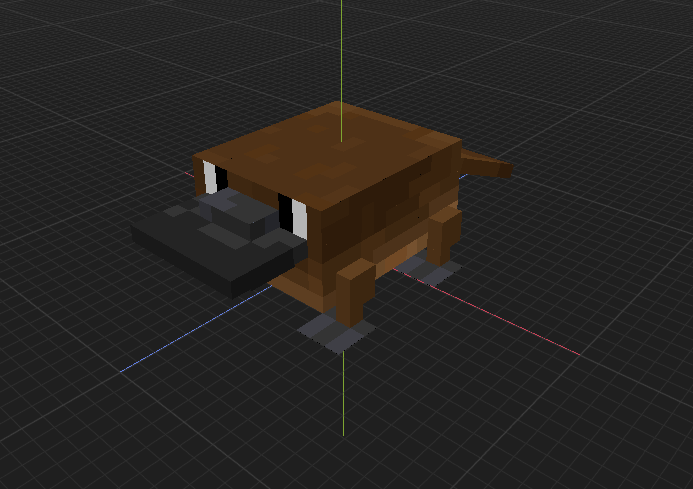

This project aims to convert models from Blockbench, a very popular 3D modeling software in the Minecraft community, to a format compatible with Block Display Engine (BDEngine). The idea is to make accessible a wide variety of objects designed for mods without requiring client-side modification installation: we exploit the display entities introduced in recent Minecraft versions (block display and item display) as well as customizable player heads to recreate geometry and textures.
Blockbench allows designing cube-based models by specifying their dimensions (from/to), rotations, and UV coordinates of different faces. Models are saved in a JSON .bbmodel file and are essentially intended to be used in mods or resource packs. Conversely, BDEngine is an open-source engine developed by illystray to simplify the creation of 3D objects in-game via vanilla display entities. I am not its author; my work focuses on developing a converter between Blockbench and BDEngine. In this engine, each cube is represented by a "player head" whose scale, rotation, and texture we control.
A mod is an additional program that modifies or enriches the game's behavior. Players must install mods locally, and usage is often limited to certain Minecraft versions. With BDEngine, all objects are reproduced in pure vanilla: only commands and resources are needed, which facilitates distribution and avoids mod-related constraints.
In a Blockbench model, geometry is composed of several elements, generally parallelepipeds. Each element is defined by its coordinates from = (x_f, y_f, z_f) and to = (x_t, y_t, z_t) expressed in pixels (1 block = 16 pixels). Rotation around a pivot can also be defined. BDEngine, on the other hand, only knows display entities: a "head display" represents a cube with a default size of 8 × 8 × 8 pixels. To reproduce a Blockbench element, we must calculate the translation, scale, and rotation of the head in number of blocks (division by 16) and apply textures to each of the six faces.
Conversion therefore involves a change of coordinate system and units. We first calculate the model center to align the entire structure around this origin. Then, for each element, we determine:
To convert these values to BDEngine coordinates, we use the following formulas. The engine places each head relative to the center of its top face: if the element measures width × height × depth and rests on $bottom = (b_x,b_y,b_z)$, then the cube center is located at $center_x = b_x + \frac{width}{2}$, $center_z = b_z + \frac{depth}{2}$ and the top face at $top_y = b_y + height$. The position in blocks is obtained by subtracting the model center and dividing by 16:
The scale is deduced from the ratio between the element size and the native head size (8 pixels):
Blockbench rotations follow the "Z → X → Y" order. To obtain the 4×4 rotation matrix used by BDEngine, we first calculate elementary rotations (in radians) around the three axes:
Multiplied by the scale, this rotation matrix is inserted into the 4×4 transformation matrix:
This matrix is directly written to the .bdengine file and interpreted in-game by the head display entity.
In "stretch" mode, each model element is represented by a single stretched head. This approach is fast but can deform textures and deteriorate rendering. The "smart cube" mode instead subdivides elements into several small cubes (16, 8, 4, 2, or 1 pixels per side). An optimization algorithm analyzes each element's dimension and UV coordinates to choose the best decomposition: this preserves square pixels and reduces texture stretching. Flat faces are converted to thin heads (thickness ≈ 0.011 block) to simulate a volumeless surface.
Player heads are a key element of this trick: they have a 64×64 pixel texture template where each face is an 8×8 pixel region (by default). To apply a custom texture, we first calculate the element's UV region in the Blockbench file, then resize it to the corresponding region in the head template. For example, a cube's north face is mapped to the (8–16, 8–16) area of the template. If the original texture has width w and height h, the linear correspondence between a coordinate u in Blockbench and coordinate U in the head is: U = x_0 + u × 8 / w. Similarly for the vertical axis: V = y_0 + v × 8 / h, where (x_0, y_0) is the upper-left corner of the target region. This affine transformation ensures pixels remain square (1:1 ratio) and the texture is not deformed during head mapping.
For each sub-cube, we calculate its local position (dx, dy, dz), its size (sx, sy, sz) and apply, if necessary, the element's rotation and that of its parents. The sub-cube's top face center is moved to the global coordinate system via the above formula. The texture is cut according to each face's UV coordinates: a sub-rectangle of the texture file is resized to the head's active area (32×32 pixels). The "up", "down", "north", "south", "east" and "west" areas of a head texture correspond respectively to regions (8,0–16,8), (16,0–24,8), (8,8–16,16), (24,8–32,16), (0,8–8,16) and (16,8–24,16) on a 64×64 PNG. By assigning sub-textures to these regions, we obtain precise and sharp in-game rendering.
The project is organized around several modules:
converter.py: entry point that orchestrates reading the .bbmodel file, texture extraction and writing the compressed .bdengine file (gzip + base64).conversion_strategy.py: defines two conversion strategies: StretchConversionStrategy (one head per element) and SmartCubeConversionStrategy (decomposition into sub-cubes and texture subdivision).head_factory.py: manufactures JSON structures representing BDEngine heads, calculates transformation matrices and encodes textures in base64.math_utils.py: groups degree ↔︎ radian conversions, creation of 3×3 and 4×4 rotation matrices, as well as 3D point transformation.texture_manager.py and texture_subdivider.py: load texture images, apply transparency processing, extract relevant UV regions and subdivide textures for each sub-cube.smart_cube_optimizer.py: analyzes element dimensions to determine the best cube combination (exact or with controlled stretching) and suggest subdivisions based on UV density.Before presenting the converter results, here are some examples of creations made by users directly with BDEngine. These models illustrate the engine's capabilities and show what can be accomplished with vanilla display entities.


Here are now concrete examples of conversion from Blockbench to BDEngine. The left images show the original models in Blockbench, and the right ones present the result after conversion by our tool.




These conversion examples demonstrate the converter's ability to faithfully transform complex Blockbench models into BDEngine structures. You can observe how rotations, scales, and textures are preserved during conversion, allowing vanilla use of creations originally intended for mods.
This converter is still under development. Some features are missing or remain imperfect:
outliner) still needs adjustments so that rotations and translations compose exactly as in the software.